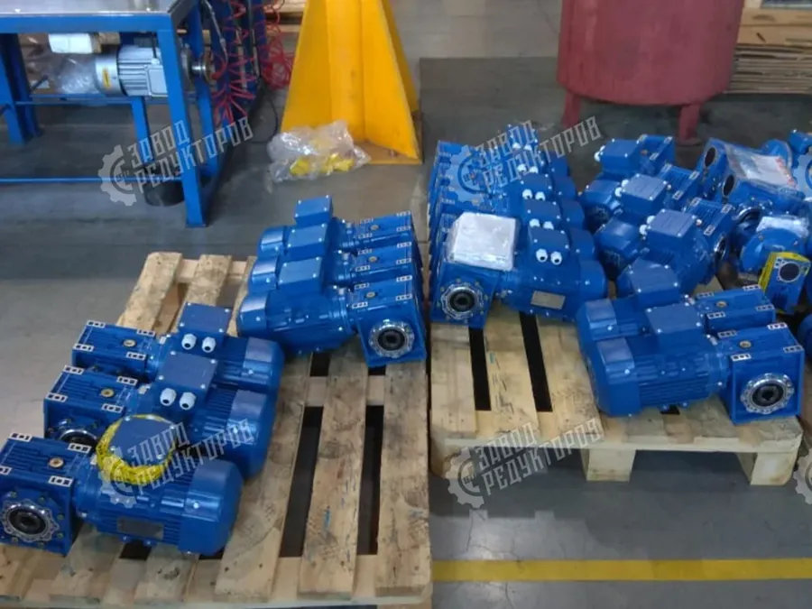

Купить SEW-Eurodrive в России сегодня можно двумя путями: заказать оригинальный мотор-редуктор SEW под поставку или поставить функциональный аналог, который мы изготовим по вашему шильду — как правило, дешевле и быстрее. Разберём, чем отличаются серии SEW, как оформить заказ по модели или шильду и в какие сроки приходит привод.
SEW-Eurodrive — немецкий производитель мотор-редукторов и приводной техники, один из мировых лидеров рынка. Под маркой SEW поставляются редукторы разных конструкций, и каждая серия обозначается буквой в начале модели:
Подробнее о расшифровке моделей и соответствии серий нашим аналогам — на странице SEW-Eurodrive. Если вы знаете маркировку SEW лишь частично, инженер восстановит характеристики по шильду.

Чтобы купить оригинальный SEW-Eurodrive, нужна точная модель. Передайте нам один из вариантов:
По этим данным мы оформим заказ оригинала SEW под поставку и пришлём расчёт цены и срока по запросу. Стоимость и доступность оригинальной позиции зависят от серии, типоразмера и текущей логистики, поэтому цена считается индивидуально.
Срок поставки оригинального SEW-Eurodrive зависит от того, есть ли нужный типоразмер на складах поставщиков или его везут под заказ. Ходовые позиции серий R и K приходят быстрее, специфические исполнения с тормозом, энкодером или нестандартным фланцем — дольше. Точный срок мы подтверждаем письменно вместе с ценой при оформлении запроса: ориентир по конкретной модели даём после проверки наличия.

Когда срок поставки оригинала критичен или важна цена, разумная альтернатива — функциональный аналог SEW нашего производства. Мы изготавливаем мотор-редуктор с теми же ключевыми параметрами: мощностью, передаточным числом, моментом и присоединительными размерами, чтобы он встал на место без переделки рамы. Как правило, такой аналог обходится дешевле оригинала и не зависит от внешней логистики.
Подробнее о подходе — в разделе импортозамещения редукторов и в материале про аналоги SEW, NORD и Bonfiglioli. Там разобрано, как мы сопоставляем серии импортных приводов с отечественными и какие параметры проверяем перед изготовлением.
Выбор между оригинальным SEW и аналогом — это всегда баланс цены, срока и требований к приводу. Чтобы не ошибиться, начните с подбора редуктора по задаче: пришлите модель SEW или фото шильда, и инженер предложит оба варианта с расчётом по запросу. Так вы сразу видите, что выгоднее именно в вашем случае — заказать оригинал под поставку или поставить аналог.
| R | цилиндрические соосные — конвейеры, насосы, длительная работа S1 |
|---|---|
| F | плоские параллельные — встройка при ограниченной высоте |
| K | конически-цилиндрические — высокий момент, привод под углом 90° |
| S | червячно-цилиндрические — компактный привод, пониженный шум |
На практике оригинал SEW оправдан там, где привод входит в гарантийную или сертифицированную линию оборудования и замена компонента недопустима по требованиям заказчика. В остальных случаях — при модернизации, ремонте парка машин или серийной комплектации — функциональный аналог закрывает задачу с тем же моментом и присоединительными размерами, а цену и срок мы фиксируем по запросу по обоим вариантам сразу. Это удобно: вы сравниваете оригинал и аналог в одном коммерческом предложении и принимаете решение по фактическим цифрам, а не по предположениям.
Чтобы расчёт был точным, помимо модели или шильда полезно указать монтажное положение, тип входного вала или фланца двигателя и наличие тормоза либо энкодера — эти детали влияют и на подбор оригинала, и на конструкцию аналога. Если часть данных недоступна, инженер восстановит недостающие параметры по присоединительным размерам и режиму работы. После этого мы подтверждаем цену и срок письменно — отдельно по оригиналу под заказ и отдельно по аналогу нашего производства.
| Серия SEW | Тип привода | Наш аналог |
|---|---|---|
| R | цилиндрический соосный | соосный мотор-редуктор серии 1МЦ2С / аналог по моменту |
| F | плоский параллельный | цилиндрический плоскостной редуктор под встройку |
| K | конически-цилиндрический | цилиндро-конический мотор-редуктор, вал 90° |
| S | червячно-цилиндрический | комбинированный червячно-цилиндрический привод |
| W / SF | червячный компактный | червячный редуктор Ч / 2Ч по межосевому расстоянию |
| RF / RX | соосный фланцевый / одноступенчатый | соосный фланцевый аналог по присоединительным размерам |
Купить SEW-Eurodrive в России можно и оригиналом под заказ, и аналогом нашего изготовления. Для оригинала нужна точная модель или шильд, цена и срок поставки считаются по запросу. Аналог SEW — альтернатива дешевле и без зависимости от внешней логистики. Пришлите модель SEW или фото шильда — инженер Завода Редукторов рассчитает оба варианта и пришлёт коммерческое предложение.
Передайте нам полную модель по каталогу, фото шильда установленного редуктора или старый привод с паспортом. По этим данным мы оформим заказ оригинала SEW под поставку и пришлём расчёт цены и срока по запросу.
R — цилиндрические соосные для длительной работы под нагрузкой; F — плоские параллельные для встройки при ограниченной высоте; K — конически-цилиндрические с приводом под углом 90° и высоким моментом; S — червячно-цилиндрические, компактные и с пониженным шумом.
Пришлите фото узла и шильда с линейкой либо сам старый привод. Инженер восстановит тип редуктора по присоединительным размерам, мощности и передаточному числу и предложит оригинал под заказ или аналог.
Стоимость и доступность оригинальной позиции SEW зависят от серии, типоразмера, исполнения и текущей логистики, поэтому цена считается индивидуально. Мы подтверждаем цену и срок письменно при оформлении запроса по конкретной модели.
Как правило, да. Функциональный аналог нашего производства повторяет ключевые параметры — мощность, передаточное число, момент и присоединительные размеры, — обходится дешевле оригинала и не зависит от внешней логистики.
Срок зависит от наличия типоразмера на складах поставщиков или поставки под заказ. Ходовые позиции серий R и K приходят быстрее, исполнения с тормозом, энкодером или нестандартным фланцем — дольше. Точный срок подтверждаем письменно вместе с ценой.
Чтобы купить SEW-Eurodrive с гарантией совместимости, мы работаем сразу по двум направлениям — оригинал и аналог. По вашей модели или шильду подбираем оригинальный мотор-редуктор SEW под поставку, а параллельно предлагаем функциональный аналог нашего производства с теми же мощностью, передаточным числом и присоединительными размерами. Цену и срок по обоим вариантам считаем индивидуально и присылаем по запросу.
Мотор-редукторы SEW-Eurodrive обозначаются буквой серии и типоразмером: R — соосно-цилиндрические, K — коническо-цилиндрические, S — червячные, F — плоские параллельные, W — компактные червячные. Чтобы купить SEW корректно, по шильду снимают серию, передаточное число, момент M2, мощность двигателя и монтажное исполнение — этого достаточно и для поставки оригинала, и для подбора функционального аналога.
Аналог SEW нашего производства повторяет тип передачи, кинематику и присоединительные размеры (фланец IEC, диаметры валов), а при несовпадении посадки закладывается переходный фланец или спецвал. Импортные цены не публикуем — стоимость оригинала и аналога зависят от модели и срока, поэтому считаем индивидуально и присылаем по запросу.
| Серия SEW | Тип → наш аналог |
|---|---|
| R | Соосно-цилиндрический → ZR-Ц |
| K | Коническо-цилиндрический → ZR-КЦ |
| F | Плоский параллельный → ZR-ПЦ |
| S | Червячно-цилиндрический → ZR-Ч |
| W | Компактный червячный → ZR-Ч |
| Данные с шильда | Зачем |
|---|---|
| Серия и типоразмер | определить тип передачи |
| Передаточное число i | уравнять выходные обороты |
| Момент M2 (Н·м) | проверить запас по нагрузке |
| Мощность и фланец двигателя | подбор мотора IEC |
| Монтажное исполнение | положение и крепление |
| Цена и срок | по запросу (оригинал/аналог) |
Пришлите модель SEW или фото шильда — рассчитаем поставку оригинала и аналог, пришлём КП в течение 15 минут.
Оставить заявку